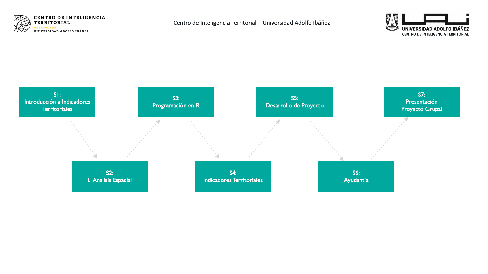

Gestión de Datos Espaciales
Diplomado en Evidencia de Data Territorial - UAI

1 Syllabus
1.1 Introducción
Hoy en día es cada vez más común contar con información georreferenciada, la cual se utiliza en el día a día para analizar fenómenos territoriales y para apoyar decisiones dentro de diversas instituciones de los sectores tanto privado, público y académico. Esta información geográfica puede tomar diversas formas en el espacio, y el uso de técnicas de modelamiento territorial permite analizarla de una manera cuantitativa, robusta y escalable.
En modelamiento territorial permite revelar patrones geoespaciales en los datos que podrían pasar desapercibidos al analizarse con herramientas estadísticas convencionales que no incorporen explícitamente la dimensión espacial. Este campo está en constante desarrollo y se puede considerar como una intersección entre la geoestadística, geomática, inteligencia artificial y sistemas de información geográfica (SIG). Este enfoque interdisciplinario es necesario para comprender procesos territoriales complejos e interdependientes. Para construir estos modelos se deben equilibrar cuidadosamente los conocimientos del dominio del problema con las diferentes herramientas y técnicas de análisis de datos que se han desarrollado específicamente para representar el espacio geográfico.
En este curso proponemos un enfoque de análisis territorial aplicado utilizando el lenguaje de programación R Project como herramienta principal de procesamiento. A través de R, abordaremos desde los niveles básicos hasta los avanzados necesarios para recolectar, explorar, calcular y visualizar datos geoespaciales. El uso de R no solo nos permitirá manejar y analizar grandes volúmenes de datos de manera eficiente, sino también implementar modelos sofisticados que mejoren la precisión y profundidad de nuestros análisis. Además, la capacidad de automatización y escalabilidad de los scripts en R facilitará la replicación de estudios y el procesamiento de datos en múltiples escenarios, aumentando así la robustez y reproducibilidad de nuestros resultados.
1.2 Objetivos
Objetivo General
- Proveer a los estudiantes las habilidades y conocimientos necesarios para utilizar R en el análisis de datos espaciales, con el fin de construir y aplicar indicadores territoriales que modelen y expliquen la situación de las personas en el territorio, facilitando la toma de decisiones en políticas públicas y privadas.
Objetivos Específicos
Desarrollar competencias en el uso de R para la manipulación y análisis de datos geoespaciales: Los estudiantes aprenderán desde los fundamentos de la programación en R hasta técnicas avanzadas para recolectar, explorar, y visualizar datos espaciales, asegurando una comprensión sólida de las herramientas y métodos necesarios para el análisis territorial.
Capacitar a los estudiantes en la consulta y análisis de bases de datos de encuestas: Se enseñará cómo acceder, manipular y analizar datos provenientes de encuestas, integrando esta información con datos espaciales para crear indicadores que reflejen la situación socioeconómica y demográfica de diferentes zonas, comunas y regiones.
Aplicar técnicas de modelado para la construcción de indicadores territoriales: Los estudiantes aprenderán a desarrollar y aplicar modelos que expliquen situaciones territoriales específicas, utilizando estos indicadores para apoyar la formulación y evaluación de políticas públicas y estrategias privadas, mejorando la toma de decisiones basada en datos.
1.3 Contenidos

1.4 Profesor: Denis Berroeta
Coordinador de Investigación, Centro de Inteligencia Territorial - UAI.
email: denis.berroeta@uai.cl
Magíster en Inteligencia Artificial, Doctorado y Master en Data Science (cursando), Ingeniero en Prevención de Riesgos y Topógrafo. Tiene experiencia en modelamiento y análisis de datos espaciales, trabajando en diferentes proyectos de investigación públicos y privados en el Centro de Inteligencia Territorial de la Universidad Adolfo Ibáñez, donde se desempeña como coordinador de investigación, diseñando y gestionando la implementación de metodologías de análisis de datos territoriales. Posee experiencia como profesor en Geoestadísticas; Análisis Criminal, Análisis de imágenes satelitales para el monitoreo ambiental y Data Science. Tema de Tesis Detección de Cambios en Imágenes Radar con técnicas de deep learning.
Profesor de cursos y postgrados de la Escuela de Gobierno y de Diseño en UAI.
1.5 Metodología
El desarrollo del curso se llevará a cabo mediante las siguientes actividades:
- Clases expositivas: realizadas por el/la profesor/a donde se revisarán los aspectos conceptuales, teóricos y prácticos de las técnicas de análisis.
- Clases prácticas: realizadas por el/la profesor/a donde se revisarán los aspectos de implementación y ejecución del análisis de datos mediante código en R.
- Trabajos en clases: ejercicios prácticos.
- Proyecto de curso: realización de un proyecto práctico que resuelva algún problema de ciencia de datos geoespaciales utilizando las herramientas cubiertas en el curso.
1.6 Evaluación
El curso se evaluará a través de un proyecto grupal que se desarrollará durante todo el curso y se expondrá en la última clase. Este proyecto es el 100% de la nota del curso.
En caso que el alumno no pueda asistir a la fecha de la presentación final, deberá justificar con certificado médico o laboral. Si es aceptada su justificación, podrá acceder a una segunda y última instancia de evaluación optando a la nota máxima de aprobación. De lo contrario tendrá nota 1.